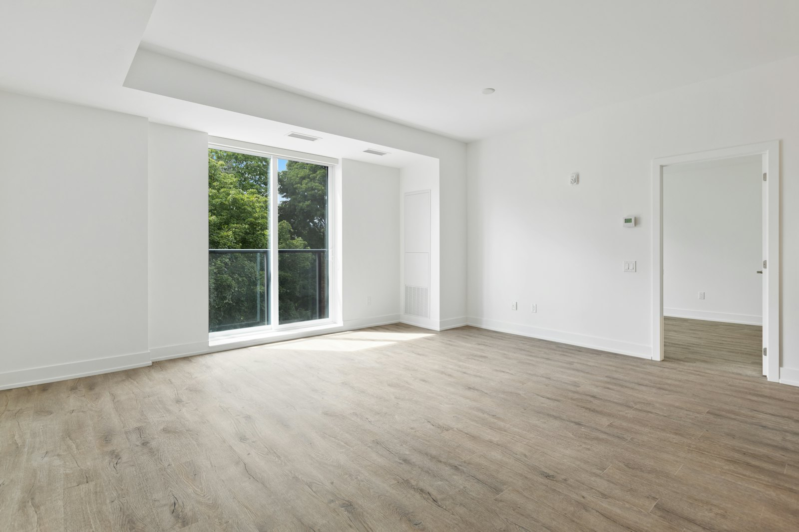

01
아파트 매매
문정동과 장지동 단지를 주로 봅니다. 파는 집과 들어갈 집이 물려 있으면 잔금일과 이사 날짜를 양쪽 다 맞춰 놓은 다음에 계약서를 쓰고, 중도금 일정도 그 자리에서 함께 정합니다.
요율표 적용

아파트와 상가를 함께 다룹니다.
SERVICE
아래 분야를 다룹니다. 중개보수는 공인중개사법과 서울특별시 조례가 정한 상한 안에서 계약 전에 협의합니다.
01
문정동과 장지동 단지를 주로 봅니다. 파는 집과 들어갈 집이 물려 있으면 잔금일과 이사 날짜를 양쪽 다 맞춰 놓은 다음에 계약서를 쓰고, 중도금 일정도 그 자리에서 함께 정합니다.
요율표 적용
02
보증금 규모에 따라 근저당과 선순위 임차인을 확인합니다. 전세보증금 반환보증에 가입할 수 있는 매물인지 계약 전에 확인해 드리고, 어려운 경우에는 그 이유를 등기부에 적힌 금액으로 설명합니다.
요율표 적용
03
법조단지 주변 1층과 지하 상가를 다룹니다. 권리금이 걸린 자리는 기존 임차인과 일정을 조율합니다.
0.9% 이내 협의
04
문정지구 지식산업센터 임대와 분양권 매매를 받습니다. 지식산업센터는 입주할 수 있는 업종이 정해져 있어서 사업자등록증의 업종부터 확인한 뒤에 자리를 보여 드립니다.
0.9% 이내 협의
05
계약 만기 2개월 전에 갱신 여부를 확인하고 월세 수납도 대신 챙깁니다. 원거리 임대인 위주로 맡고 있습니다.
월 정액 협의
아래 여섯 가지는 거래 종류와 상관없이 매번 확인합니다.
01
근저당과 가압류, 신탁 여부를 봅니다. 계약 당일 아침에 한 번 더 뗍니다.
02
면적과 용도, 위반건축물 표기를 확인합니다. 상가는 업종 제한을 같이 봅니다.
03
다가구주택은 앞선 임차인의 보증금 합계를 임대인에게 받아 확인합니다. 그 합계에 근저당 채권최고액을 더한 금액이 시세에 견줘 어느 정도인지 숫자로 적어 보여 드립니다.
04
공인중개사법 제25조가 정한 법정 서식에 적어 설명하고 서명을 받습니다. 사본을 드리고 사무소에도 보관합니다.
05
단지별 관리비 항목과 세대당 주차 대수를 미리 적어 드립니다. 상가는 여기에 부가세와 공용관리비가 따로 붙는 경우가 많아 임대인에게 확인한 뒤 계약서에 적습니다.
06
앞뒤 거래가 물린 경우 날짜를 먼저 맞춘 뒤 계약서를 씁니다.
공인중개사법과 서울특별시 조례가 정한 상한입니다. 상한 안에서 의뢰인과 협의해 정합니다.
| 구분 | 거래금액 | 상한 요율 |
|---|---|---|
| 주택 매매와 교환 | 5천만원 미만 | 0.6% 이내, 한도액 25만원 |
| 주택 매매와 교환 | 2억원 이상 9억원 미만 | 0.4% 이내 |
| 주택 매매와 교환 | 9억원 이상 12억원 미만 | 0.5% 이내 |
| 주택 매매와 교환 | 12억원 이상 15억원 미만 | 0.6% 이내 |
| 주택 매매와 교환 | 15억원 이상 | 0.7% 이내 |
| 주택 임대차 | 5천만원 미만 | 0.5% 이내, 한도액 20만원 |
| 주택 임대차 | 1억원 이상 6억원 미만 | 0.3% 이내 |
| 주택 임대차 | 6억원 이상 12억원 미만 | 0.4% 이내 |
| 주택 임대차 | 15억원 이상 | 0.6% 이내 |
| 주택 외 상가와 토지 | 매매와 임대차 모두 | 0.9% 이내 협의 |
위 요율은 공인중개사법 제32조와 서울특별시 주택 중개보수 등에 관한 조례가 정한 법정 상한이며, 이 금액을 넘겨 받을 수 없습니다. 실제 보수는 상한 안에서 의뢰인과 협의해 정하고 계약서와 영수증에 적습니다. 표에 없는 구간은 사무소에 게시한 요율표에 그대로 나와 있습니다. 부가가치세는 별도입니다. 임대차 거래금액은 보증금에 월차임 곱하기 100을 더해 산정하며, 산정액이 5천만원 미만이면 월차임 곱하기 70으로 다시 계산합니다.
1단계
조건 상담
평형과 예산, 입주 시기를 적습니다.
2단계
매물 안내
등기부를 확인한 매물만 보여 드립니다.
3단계
계약과 확인설명
확인설명서에 적고 서명을 받습니다.
4단계
잔금과 이전
잔금일에 등기부를 다시 확인합니다.